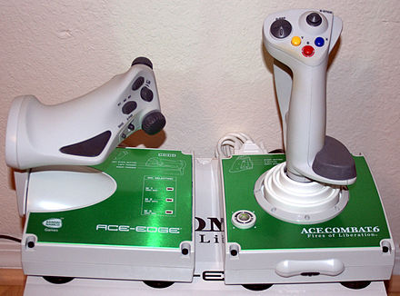

Джо́йстик (англ. joystick) — пристрій-руків'я керування у відеоіграх: важіль на підставці, який можна відхиляти у двох площинах. На важелі можуть бути різного роду гашетки і перемикачі. Словом «джойстик» в побуті називають орган управління, наприклад, в мобільному телефоні. Подібні графічні маніпулятори з'явилися водночас з електронними дисплеями в радіолокаторах, їх прототипом була ручка керування літаком.
